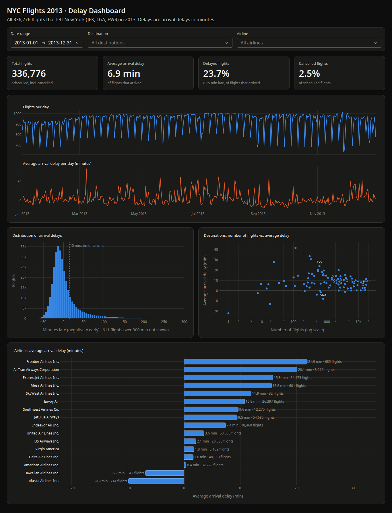

هدف این پروژه ساختن یک داشبورد تعاملی برای تحلیل دادههای پرواز است؛ صفحهای در مرورگر که تعداد پروازها، میزان تأخیرها، مقصدها و شرکتهای هواپیمایی را نشان میدهد و کاربر میتواند با فیلترها (بازهٔ تاریخ، مقصد و شرکت هواپیمایی) دادهها را بررسی کند. با هر تغییر فیلتر، همهٔ کارتها و نمودارها فوراً بهروز میشوند.
دادهها مربوط به مجموعهدادهٔ شناختهشدهٔ nycflights13 است: همهٔ ۳۳۶٬۷۷۶ پروازی که در سال ۲۰۱۳ میلادی از سه فرودگاه شهر نیویورک (JFK، LGA و EWR) پرواز کردهاند.
کار در شش مرحله انجام شد:
| کتابخانه | کاربرد در این پروژه |
|---|---|
| pandas | خواندن، پاکسازی، فیلتر کردن و خلاصهکردن جدول پروازها |
| pyarrow | خواندن و نوشتن سریع فایلهای Parquet |
| plotly | رسم نمودارهای تعاملی (با قابلیت نشان دادن جزئیات هنگام بردن ماوس روی نمودار) |
| dash | ساختن صفحهٔ وب داشبورد و بهروزرسانی خودکار آن با تغییر فیلترها |
همهٔ کتابخانهها در یک محیط مجازی (پوشهٔ .venv) نصب شدهاند و نسخهٔ دقیق
آنها در فایل requirements.txt ثبت شده است تا پروژه روی هر رایانهای دقیقاً به همین شکل
اجرا شود. برای نگهداری تاریخچهٔ تغییرات از git استفاده شد و هر مرحله
جداگانه ثبت (commit) شد.
flight-dashboard/ ├── data/ │ ├── flights.csv # raw data (never modified, not in git) │ └── clean_flights.parquet # cleaned data, made by data_prep.py ├── src/ │ ├── data_prep.py # stage 3: cleaning │ ├── analysis.py # stage 4: analysis functions + report │ ├── app.py # stage 5: the Dash dashboard │ ├── check_numbers.py # stage 6: checks the numbers │ └── assets/style.css # dark theme ├── docs/ # screenshot + this document ├── requirements.txt └── README.md
فایل analysis.py توابعی دارد که هم برای چاپ گزارش در ترمینال استفاده میشوند و هم
داشبورد از آنها استفاده میکند؛ به این ترتیب اعداد گزارش و اعداد داشبورد همیشه از یک کد
میآیند و نمیتوانند با هم تفاوت داشته باشند.
پیش از هر کاری، فایل خام خوانده شد تا بدون هیچ فرضی دربارهٔ نام ستونها، ساختار آن بررسی شود. فایل ۳۳۶٬۷۷۶ ردیف و ۲۱ ستون دارد؛ هر ردیف یک پرواز است. دادهها فقط سال ۲۰۱۳، فقط سه فرودگاه مبدأ، ۱۰۵ مقصد و ۱۶ شرکت هواپیمایی را در بر میگیرند.
| مفهوم | ستون(ها) | توضیح |
|---|---|---|
| شمارهٔ پرواز | carrier + flight | شمارهٔ پرواز بهتنهایی بین شرکتها تکرار میشود؛ مثلاً UA1545 ترکیب هر دو است. |
| مبدأ و مقصد | origin، dest | کد سهحرفی فرودگاه |
| شرکت هواپیمایی | carrier، name | کد دوحرفی و نام کامل شرکت |
| تاریخ | year، month، day | سال، ماه و روز پرواز |
| زمان برنامهریزیشده و واقعی | sched_dep_time، dep_time و مشابه آن برای ورود | به شکل عدد «ساعتدقیقه» ذخیره شدهاند؛ مثلاً ۱۴۵۳ یعنی ساعت ۱۴:۵۳. |
| تأخیر | dep_delay، arr_delay | تأخیر حرکت و تأخیر رسیدن، به دقیقه؛ عدد منفی یعنی زودتر از برنامه. |
ستون تأخیر از قبل وجود داشت و لازم نبود از روی زمانها محاسبه شود. برای اطمینان، تأخیر حرکت یک بار دیگر از روی زمان برنامهریزیشده و زمان واقعی حساب شد و برای ۹۹٫۹۹٪ پروازها دقیقاً با ستون موجود برابر بود.
| ستون | تعداد گمشده | دلیل |
|---|---|---|
dep_time، dep_delay | ۸٬۲۵۵ (۲٫۴۵٪) | پروازهای لغوشده که هرگز حرکت نکردند |
arr_time | ۸٬۷۱۳ (۲٫۵۹٪) | پروازهای لغوشده و چند پرواز که بهطور عادی فرود نیامدند |
arr_delay، air_time | ۹٬۴۳۰ (۲٫۸۰٪) | لغوشدهها بهعلاوهٔ ۱٬۱۷۵ پروازی که حرکت کردند ولی زمان رسیدن ندارند (احتمالاً به فرودگاه دیگری تغییر مسیر دادهاند) |
tailnum (شمارهٔ هواپیما) | ۲٬۵۱۲ (۰٫۷۵٪) | همه مربوط به پروازهای لغوشدهاند |
این برنامه فایل خام را فقط میخواند و هرگز تغییرش نمیدهد. اثرانگشت (checksum) فایل خام در ابتدا و انتهای پروژه مقایسه شد و دقیقاً یکسان بود. هیچ ردیفی حذف نمیشود و یک بررسی ایمنی در کد، اگر تعداد ردیفها تغییر کند، برنامه را متوقف میکند.
۸٬۲۵۵ پرواز لغوشده و ۱٬۱۷۵ پرواز تغییر مسیر داده حذف نشدند، بلکه با دو ستون جدید
cancelled و diverted (درست/نادرست) علامتگذاری شدند. این پروازها در
«تعداد کل پروازها» شمرده میشوند، اما در میانگین تأخیر نه؛ چون تأخیر رسیدن ندارند. مزیت این کار
این است که میتوانیم درصد لغو پروازها را هم نشان دهیم.
ستونهای زمان و تأخیر برای پروازهای لغوشده عمداً خالی ماندند. اگر با صفر پر میشدند، یعنی
وانمود میکردیم این پروازها سر وقت رسیدهاند و میانگین تأخیر کمتر از واقعیت نشان داده میشد.
pandas هنگام محاسبهٔ میانگین، مقادیر خالی را خودش نادیده میگیرد. فقط
ستون tailnum با مقدار "Unknown" پر شد، چون یک برچسب متنی است و روی هیچ
عددی اثر نمیگذارد.
عددی مثل ۱۴۵۳ برای pandas فقط یک عدد است و نمیتوان با آن محاسبهٔ زمانی انجام داد. علاوه بر این، مقدار عجیب ۲۴۰۰ (نیمهشب) و پروازهایی که بعد از نیمهشب حرکت کردهاند، تبدیل مستقیم را خراب میکنند. راهحل: زمان واقعی حرکت را به شکل «زمان برنامهریزیشده + تأخیر» ساختیم که همهٔ این حالتها را خودبهخود درست حل میکند:
# Scheduled departure = date + scheduled hour + scheduled minute. df["sched_dep_datetime"] = ( df["flight_date"] + pd.to_timedelta(df["hour"], unit="h") + pd.to_timedelta(df["minute"], unit="min") ) # Actual departure = scheduled departure + departure delay. df["dep_datetime"] = df["sched_dep_datetime"] + pd.to_timedelta(df["dep_delay"], unit="min")
برای زمان رسیدن، تاریخ و زمان ساخته نشد؛ چون زمان رسیدن به وقت محلی مقصد است (مثلاً لسآنجلس سه ساعت از نیویورک عقبتر است) و مخلوط کردن آن با زمان نیویورک نتیجهٔ غلط میدهد.
بر اساس تأخیر رسیدن (همان چیزی که مسافر حس میکند) و با معیار رسمی آمریکا که پرواز تا ۱۵ دقیقه تأخیر را «بهموقع» حساب میکند:
| دسته | شرط (دقیقه) | تعداد پرواز | درصد |
|---|---|---|---|
| بهموقع | ۱۵ یا کمتر | ۲۴۹٬۷۱۶ | ۷۴٫۱٪ |
| تأخیر کم | ۱۶ تا ۴۵ | ۴۰٬۵۵۶ | ۱۲٫۰٪ |
| تأخیر متوسط | ۴۶ تا ۱۲۰ | ۲۷٬۰۴۰ | ۸٫۰٪ |
| تأخیر زیاد | بیش از ۱۲۰ | ۱۰٬۰۳۴ | ۳٫۰٪ |
| تغییر مسیر | تأخیر رسیدن ندارد | ۱٬۱۷۵ | ۰٫۳٪ |
| لغوشده | حرکت نکرده | ۸٬۲۵۵ | ۲٫۵٪ |
DELAY_BINS = [-float("inf"), 15, 45, 120, float("inf")]
DELAY_LABELS = ["On time", "Small delay", "Medium delay", "Large delay"]
category = pd.cut(df["arr_delay"], bins=DELAY_BINS, labels=DELAY_LABELS)
day_of_week: روز هفته، به ترتیب درست دوشنبه تا یکشنبهflight_code: شمارهٔ کامل پرواز، مثل UA1545is_delayed: آیا پرواز بیش از ۱۵ دقیقه دیر رسیده است؟name به airline تغییر کرد تا معنایش روشنتر باشد.دادهٔ تمیز در قالب Parquet ذخیره شد؛ قالبی فشرده و ستونی که حجم را از ۴۳ به ۱۱ مگابایت کاهش داد و زمان بارگذاری را به حدود ۰٫۰۶ ثانیه رساند. همین موضوع اصلیترین دلیل سرعت داشبورد است.
هر تابع در این فایل به یک پرسش پاسخ میدهد و یک جدول کوچک برمیگرداند: تعداد پرواز در هر ماه،
توزیع تأخیرها، مقایسهٔ شرکتهای هواپیمایی و مقصدهای پرتردد. ابزار اصلی، groupby در
pandas است: ردیفها بر اساس یک ستون گروهبندی و برای هر گروه چند عدد
خلاصه محاسبه میشود:
def compare_airlines(df):
"""Number of flights and delay numbers per airline, busiest first."""
airlines = df.groupby("airline", observed=True).agg(
flights=("id", "count"),
avg_arr_delay=("arr_delay", "mean"),
pct_delayed=("is_delayed", "mean"),
pct_cancelled=("cancelled", "mean"),
)
airlines["pct_delayed"] *= 100
airlines["pct_cancelled"] *= 100
return airlines.sort_values("flights", ascending=False)
| ماه | تعداد پرواز | میانگین تأخیر رسیدن (دقیقه) | درصد پروازهای دیررس |
|---|---|---|---|
| ژوئیه (پرترددترین و بدترین) | ۲۹٬۴۲۵ | ۱۶٫۷ | ۳۱٫۵٪ |
| ژوئن | ۲۸٬۲۴۳ | ۱۶٫۵ | ۳۰٫۸٪ |
| دسامبر | ۲۸٬۱۳۵ | ۱۴٫۹ | ۳۲٫۶٪ |
| سپتامبر (بهترین) | ۲۷٬۵۷۴ | ۴٫۰ زودتر | ۱۳٫۲٪ |
| فوریه (کمترددترین) | ۲۴٬۹۵۱ | ۵٫۶ | ۲۲٫۹٪ |
در میان شرکتهای بزرگ (بیش از ۱۰۰۰ پرواز)، American با ۰٫۴ و Delta با ۱٫۶ دقیقه کمترین، و AirTran با ۲۰٫۱ و ExpressJet با ۱۵٫۸ دقیقه بیشترین میانگین تأخیر را دارند. شرکتهای بسیار کوچک کنار گذاشته شدند، چون با تعداد پرواز کم، یک هفتهٔ بد میتواند آنها را بهترین یا بدترین نشان دهد. پرترددترین مقصد شیکاگو (ORD) با ۱۷٬۲۸۳ پرواز است.

دادهٔ تمیز فقط یک بار و هنگام شروع برنامه بارگذاری میشود. سپس یک کالبک (callback) تعریف شده است: تابعی که Dash هر بار که یکی از فیلترها تغییر کند، بهطور خودکار اجرا میکند. این تابع جدول را فیلتر میکند، اعداد و نمودارها را دوباره میسازد و به صفحه برمیگرداند:
@app.callback(
Output("kpi-flights", "children"),
... # 4 cards + 4 charts
Input("date-range", "start_date"),
Input("date-range", "end_date"),
Input("dest-filter", "value"),
Input("airline-filter", "value"),
)
def update_dashboard(start_date, end_date, destinations, airlines):
filtered = filter_flights(FLIGHTS, start_date, end_date, destinations, airlines)
...
فیلتر کردن و محاسبهٔ اعداد در توابع ساده و جداگانه (filter_flights و
compute_kpis) نوشته شدهاند تا بتوان آنها را بدون اجرای سرور هم آزمایش کرد
(بخش ۷). حالتهای خاص هم در نظر گرفته شدهاند: اگر هیچ پروازی با فیلترها جور نباشد، کارتها «–»
و نمودارها پیام «هیچ پروازی پیدا نشد» نشان میدهند و برنامه خطا نمیدهد.
style.css تعریف شده است. Dash نسخهٔ ۴ برای رنگ منوهای کشویی و تقویم از «متغیرهای CSS» استفاده میکند و با بازتعریف این متغیرها، آنها هم تیره شدند.کندترین حالت (بدون هیچ فیلتری، یعنی همهٔ ۳۳۶٬۷۷۶ پرواز) حدود ۰٫۱ ثانیه طول میکشد. دلیل این سرعت: خواندن فایل Parquet بهجای CSV، بارگذاری یکباره، و انجام همهٔ محاسبات در pandas.
یک داشبورد فقط وقتی ارزش دارد که اعدادش درست باشند. برای همین برنامهٔ
check_numbers.py نوشته شد. این برنامه برای چند حالت فیلتر، چهار عدد اصلی (تعداد پرواز،
میانگین تأخیر، درصد دیررس و درصد لغو) را از دو راه کاملاً جدا حساب میکند و مقایسه میکند:
| حالت آزمون | تعداد پرواز | میانگین تأخیر | درصد دیررس | درصد لغو | نتیجه |
|---|---|---|---|---|---|
| کل سال | ۳۳۶٬۷۷۶ | ۶٫۹۰ | ۲۳٫۷۱ | ۲٫۴۵ | قبول |
| ژوئیه، فقط United | ۵٬۰۶۶ | ۱۰٫۶۸ | ۲۷٫۱۴ | ۱٫۳۰ | قبول |
| ATL یا ORD با Delta یا American | ۱۶٬۶۳۰ | ۴٫۵۱ | ۱۹٫۷۸ | ۱٫۶۸ | قبول |
| فقط ۸ فوریه | ۹۳۰ | ۲۴٫۲۳ | ۴۷٫۲۵ | ۵۰٫۷۵ | قبول |
هر ۱۶ مقایسه یکسان بودند. برای اطمینان از اینکه خود آزمون هم درست کار میکند، یک بار عمداً اعداد ژوئیه با دادهٔ اوت مقایسه شد و آزمون، همانطور که انتظار میرفت، «رد» اعلام کرد. آزمونی که هیچوقت رد نشود، چیزی را ثابت نمیکند.
در مرحلهٔ ساخت، ۱۱ ترکیب فیلتر دیگر هم آزمایش شد؛ از جمله یک روز تنها، روز آخر سال (برای اطمینان از اینکه تاریخ پایان هم شمرده میشود)، فیلترهای خالی، مقصدی که تنها پروازش لغو شده بود و فیلتری که هیچ پروازی را برنمیگرداند. همچنین بررسی شد که دادهٔ نمودارها با هم جور باشد: مجموع پروازهای روزانه برابر کل پروازها، و مجموع ستونهای هیستوگرام بهعلاوهٔ پروازهای خارج از بازه برابر تعداد پروازهای رسیده.
is_delayed ابتدا ترکیبی نامرتب از درست/نادرست/خالی بود و به نوع مناسب boolean تبدیل شد.به پایتون نسخهٔ ۳٫۱۱ یا بالاتر نیاز است. دادهٔ تمیز همراه پروژه است، پس داشبورد بلافاصله پس از نصب اجرا میشود:
python3 -m venv .venv source .venv/bin/activate # Windows: .venv\Scripts\activate pip install -r requirements.txt python src/app.py # then open http://127.0.0.1:8050 python src/analysis.py # optional: findings report python src/data_prep.py # optional, needs data/flights.csv python src/check_numbers.py # optional, needs data/flights.csv
| واژه | معنی |
|---|---|
| DataFrame | جدول داده در pandas؛ ردیفها و ستونها، مثل یک صفحهگسترده |
| محیط مجازی (venv) | پوشهای جدا برای کتابخانههای یک پروژه، تا با پروژههای دیگر قاطی نشود |
| Parquet | قالب فایل فشرده و ستونی برای جدولها؛ کوچکتر و بسیار سریعتر از CSV |
| کالبک (callback) | تابعی که Dash هنگام تغییر یک ورودی (مثلاً فیلتر) خودکار اجرا میکند |
| شاخص کلیدی (KPI) | عدد اصلی که وضعیت را خلاصه میکند، مثل درصد پروازهای دیررس |
| میانه | عدد وسط وقتی همهٔ مقادیر مرتب شوند؛ برخلاف میانگین، تحت تأثیر چند عدد بسیار بزرگ قرار نمیگیرد |
| توزیع چوله | توزیعی که یک طرفش دنبالهٔ بلندی دارد (اینجا: چند تأخیر بسیار طولانی) |
| مقیاس لگاریتمی | محوری که هر گام آن ده برابر گام قبل است (۱، ۱۰، ۱۰۰، ۱۰۰۰) |
| groupby | گروهبندی ردیفها بر اساس یک ستون و محاسبهٔ خلاصه برای هر گروه |
| git / commit | ابزار ثبت تاریخچهٔ تغییرات کد / یک نقطهٔ ثبتشده در این تاریخچه |